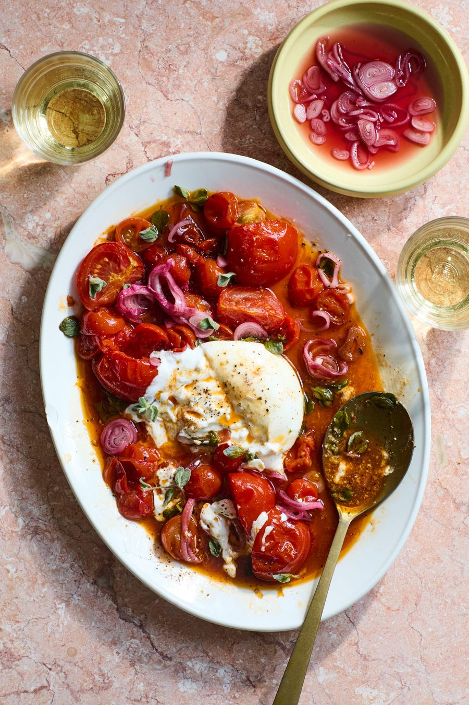

Warm tomato salad

With tomatoes coming into their peak season, it’s tempting just to eat them as they are, raw, for breakfast, lunch and supper. Much as I do that, though, I also love to soften and sweeten them still further by quickly roasting them. Served with good bread to mop up the juices, this turns the tomato into lunch or a starter in its own right, or as a versatile side for all sorts.
Put the vinegar, sugar, a teaspoon of flaky sea salt and 20ml water in a small saucepan and bring to a boil. Whisk to combine, take off the heat, stir in the shallots and leave to cool.
Heat the oven to 240C (220C fan)/475F/gas 9. Put the olive oil, honey, smoked paprika, a half-teaspoon of salt and a few twists of black pepper in a small bowl, and whisk to combine. Pour this mixture into a medium-sized oven tray lined with greaseproof paper, then add the tomatoes, garlic and thyme, and toss gently to coat.
Roast for eight minutes, until the tomatoes are just starting to fall apart, then turn off the oven and leave the tomatoes to sit in the warm oven for 10 minutes more (or until you’re ready to serve – whichever is later).
Lift out and discard the spent garlic cloves and thyme from the tomatoes, then transfer the fruit to a wide bowl and spoon over all their roasting juices. Put the burrata in the centre of the tomatoes, then sprinkle over a quarter-teaspoon of flaky salt and a few grinds of black pepper. Lift the pickled shallot rings out of their pickling liquid (reuse the liquid in something else, such as a salad dressing), and arrange them on top. Finish with a scattering of oregano leaves and serve.